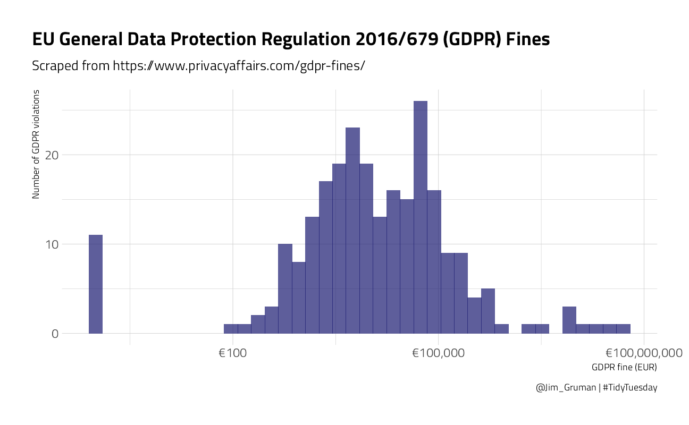
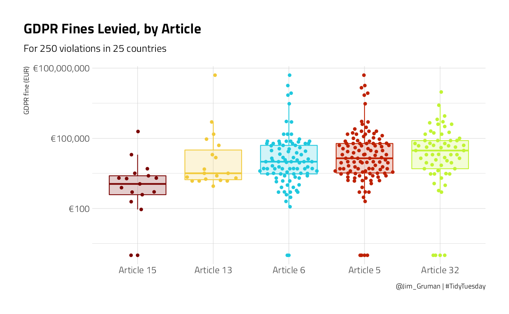
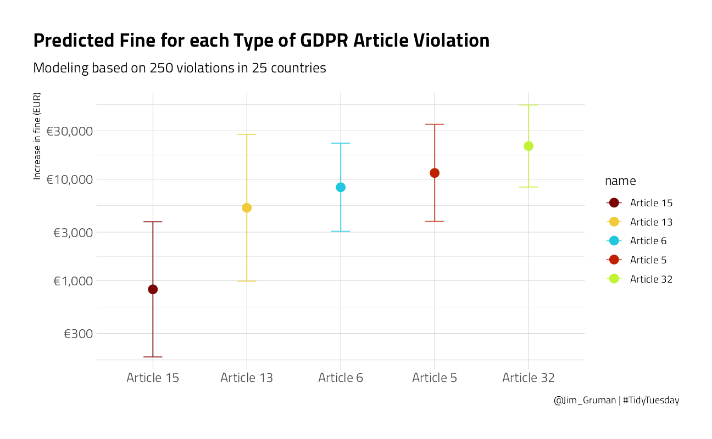
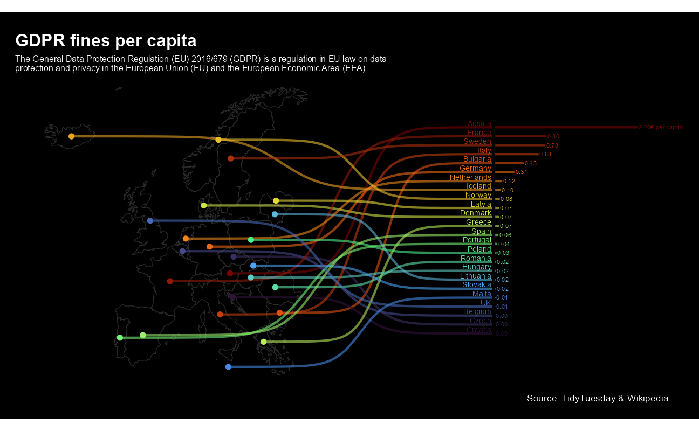

Last updated: 2021-09-15
Checks: 7 0
Knit directory: myTidyTuesday/
This reproducible R Markdown analysis was created with workflowr (version 1.6.2). The Checks tab describes the reproducibility checks that were applied when the results were created. The Past versions tab lists the development history.
Great! Since the R Markdown file has been committed to the Git repository, you know the exact version of the code that produced these results.
Great job! The global environment was empty. Objects defined in the global environment can affect the analysis in your R Markdown file in unknown ways. For reproduciblity it’s best to always run the code in an empty environment.
The command set.seed(20210907) was run prior to running the code in the R Markdown file. Setting a seed ensures that any results that rely on randomness, e.g. subsampling or permutations, are reproducible.
Great job! Recording the operating system, R version, and package versions is critical for reproducibility.
Nice! There were no cached chunks for this analysis, so you can be confident that you successfully produced the results during this run.
Great job! Using relative paths to the files within your workflowr project makes it easier to run your code on other machines.
Great! You are using Git for version control. Tracking code development and connecting the code version to the results is critical for reproducibility.
The results in this page were generated with repository version 58a0374. See the Past versions tab to see a history of the changes made to the R Markdown and HTML files.
Note that you need to be careful to ensure that all relevant files for the analysis have been committed to Git prior to generating the results (you can use wflow_publish or wflow_git_commit). workflowr only checks the R Markdown file, but you know if there are other scripts or data files that it depends on. Below is the status of the Git repository when the results were generated:
Ignored files:
Ignored: .Rhistory
Ignored: .Rproj.user/
Ignored: catboost_info/
Ignored: data/2021-09-08/
Ignored: data/acs_poverty.rds
Ignored: data/fmhpi.rds
Ignored: data/grainstocks.rds
Ignored: data/hike_data.rds
Ignored: data/us_states.rds
Ignored: data/us_states_hexgrid.geojson
Ignored: data/weatherstats_toronto_daily.csv
Untracked files:
Untracked: code/work list batch targets.R
Untracked: figure/
Note that any generated files, e.g. HTML, png, CSS, etc., are not included in this status report because it is ok for generated content to have uncommitted changes.
These are the previous versions of the repository in which changes were made to the R Markdown (analysis/GDPRfines.Rmd) and HTML (docs/GDPRfines.html) files. If you’ve configured a remote Git repository (see ?wflow_git_remote), click on the hyperlinks in the table below to view the files as they were in that past version.
| File | Version | Author | Date | Message |
|---|---|---|---|---|
| Rmd | 58a0374 | opus1993 | 2021-09-15 | remove the superfluous raw data table |
| html | 764c09b | opus1993 | 2021-09-15 | Build site. |
| Rmd | 92bc445 | opus1993 | 2021-09-15 | add tweet attribution and new viridis color scheme |
| Rmd | 02009d5 | opus1993 | 2021-09-15 | add tweet attribution and new viridis color scheme |
This week’s #TidyTuesday dataset is on EU GDPR violations.
In addition, R version 4.0.0 Arbor Day was just released. I am re-installing packages as-required while going through projects like this one.
The R Studio team recently launched tidymodels.org, a new central location with resources and documentation for tidymodels packages. Check out the official blog post for more details.
Julia Silge published a great blog post with another screencast demonstrating how to use tidymodels. She includes a good video for folks getting started with tidymodels.
Our modeling goal here is to understand what kind of GDPR violations are associated with higher fines in the #TidyTuesday dataset for this week. Before we start, what are the most common GDPR articles actually about? Roughly speaking:
Let’s get started by looking at the data on violations.
gdpr_raw <- readr::read_tsv("https://raw.githubusercontent.com/rfordatascience/tidytuesday/master/data/2020/2020-04-21/gdpr_violations.tsv")How are the fines distributed?
gdpr_raw %>%
ggplot(aes(price + 1)) +
geom_histogram(fill = "midnightblue", alpha = 0.7, bins = 40) +
scale_x_log10(labels = scales::dollar_format(prefix = "€")) +
labs(
title = "EU General Data Protection Regulation 2016/679 (GDPR) Fines",
subtitle = "Scraped from https://www.privacyaffairs.com/gdpr-fines/",
x = "GDPR fine (EUR)", y = "Number of GDPR violations",
caption = "@Jim_Gruman | #TidyTuesday"
)
Some of the violations were fined zero EUR. Let’s make a one-article-per-row version of this dataset.
gdpr_tidy <- gdpr_raw %>%
transmute(id,
price,
country = name,
article_violated,
articles = str_extract_all(article_violated, "Art.[:digit:]+|Art. [:digit:]+")
) %>%
mutate(total_articles = map_int(articles, length)) %>%
unnest(articles) %>%
add_count(articles) %>%
filter(n > 10) %>%
select(-n)
gdpr_tidy %>%
head() %>%
knitr::kable("html") %>%
kableExtra::kable_styling(
bootstrap_options = c("striped", "condensed"),
full_width = F, fixed_thead = T
)| id | price | country | article_violated | articles | total_articles |
|---|---|---|---|---|---|
| 2 | 2500 | Romania | Art. 12 GDPR|Art. 13 GDPR|Art. 5 (1) c) GDPR|Art. 6 GDPR | Art. 13 | 4 |
| 2 | 2500 | Romania | Art. 12 GDPR|Art. 13 GDPR|Art. 5 (1) c) GDPR|Art. 6 GDPR | Art. 5 | 4 |
| 2 | 2500 | Romania | Art. 12 GDPR|Art. 13 GDPR|Art. 5 (1) c) GDPR|Art. 6 GDPR | Art. 6 | 4 |
| 3 | 60000 | Spain | Art. 5 GDPR|Art. 6 GDPR | Art. 5 | 2 |
| 3 | 60000 | Spain | Art. 5 GDPR|Art. 6 GDPR | Art. 6 | 2 |
| 5 | 150000 | Romania | Art. 32 GDPR | Art. 32 | 1 |
How are the fines distributed by article?
gdpr_tidy %>%
mutate(
articles = str_replace_all(articles, "Art. ", "Article "),
articles = fct_reorder(articles, price)
) %>%
ggplot(aes(articles, price + 1, color = articles, fill = articles)) +
geom_boxplot(alpha = 0.2, outlier.colour = NA, show.legend = FALSE) +
geom_quasirandom(show.legend = FALSE) +
scale_y_log10(labels = scales::dollar_format(prefix = "€")) +
labs(
x = NULL, y = "GDPR fine (EUR)",
title = "GDPR Fines Levied, by Article",
subtitle = "For 250 violations in 25 countries",
caption = "@Jim_Gruman | #TidyTuesday"
)
Now let’s create a dataset for predictive modeling.
gdpr_violations <- gdpr_tidy %>%
mutate(value = 1) %>%
select(-article_violated) %>%
pivot_wider(
names_from = articles, values_from = value,
values_fn = list(value = max), values_fill = list(value = 0)
) %>%
janitor::clean_names()
gdpr_violations %>%
head() %>%
knitr::kable("html") %>%
kableExtra::kable_styling(
bootstrap_options = c("striped", "condensed"),
full_width = F, fixed_thead = T
)| id | price | country | total_articles | art_13 | art_5 | art_6 | art_32 | art_15 |
|---|---|---|---|---|---|---|---|---|
| 2 | 2500 | Romania | 4 | 1 | 1 | 1 | 0 | 0 |
| 3 | 60000 | Spain | 2 | 0 | 1 | 1 | 0 | 0 |
| 5 | 150000 | Romania | 1 | 0 | 0 | 0 | 1 | 0 |
| 6 | 20000 | Romania | 2 | 0 | 0 | 0 | 1 | 0 |
| 7 | 200000 | Greece | 2 | 0 | 1 | 0 | 0 | 0 |
| 9 | 30000 | Spain | 2 | 0 | 1 | 1 | 0 | 0 |
Let’s preprocess our data to get it ready for modeling.
gdpr_rec <- recipe(price ~ ., data = gdpr_violations) %>%
update_role(id, new_role = "id") %>%
step_log(price, base = 10, offset = 1, skip = TRUE) %>%
step_other(country, other = "Other") %>%
step_dummy(all_nominal_predictors()) %>%
step_zv(all_predictors())
gdpr_prep <- prep(gdpr_rec)
gdpr_prepData Recipe
Inputs:
role #variables
id 1
outcome 1
predictor 7
Training data contained 219 data points and no missing data.
Operations:
Log transformation on price [trained]
Collapsing factor levels for country [trained]
Dummy variables from country [trained]
Zero variance filter removed no terms [trained]Let’s walk through the steps in this recipe.
recipe() what our model is going to be (using a formula here) and what data we are using.id, since this variable is not a predictor or outcome but I would like to keep it in the data for convenience.price, the amount of the fine)."Other" category.Before using prep() these steps have been defined but not actually run or implemented. The prep() function is where everything gets evaluated.
Now it’s time to specify our model. I am using a workflow() in this example for convenience; these are objects that can help you manage modeling pipelines more easily, with pieces that fit together like Lego blocks. This workflow() contains both the recipe and the model (a straightforward Ordinary Least Squares linear regression).
gdpr_wf <- workflow() %>%
add_recipe(gdpr_rec) %>%
add_model(linear_reg() %>%
set_engine("lm"))
gdpr_wf== Workflow ====================================================================
Preprocessor: Recipe
Model: linear_reg()
-- Preprocessor ----------------------------------------------------------------
4 Recipe Steps
* step_log()
* step_other()
* step_dummy()
* step_zv()
-- Model -----------------------------------------------------------------------
Linear Regression Model Specification (regression)
Computational engine: lm You can fit() a workflow, much like you can fit a model, and then you can pull out the fit object and tidy() it to work with the estimates of the linear coefficients.
gdpr_fit <- gdpr_wf %>%
fit(data = gdpr_violations)
extract_fit_engine(gdpr_fit) %>%
tidy() %>%
arrange(desc(estimate))# A tibble: 13 x 5
term estimate std.error statistic p.value
<chr> <dbl> <dbl> <dbl> <dbl>
1 (Intercept) 3.77 0.409 9.21 3.82e-17
2 total_articles 0.480 0.166 2.90 4.20e- 3
3 country_Spain 0.430 0.364 1.18 2.40e- 1
4 country_Other 0.234 0.355 0.660 5.10e- 1
5 country_Germany 0.0597 0.419 0.143 8.87e- 1
6 art_32 -0.153 0.315 -0.487 6.27e- 1
7 country_Hungary -0.155 0.479 -0.324 7.46e- 1
8 country_Romania -0.346 0.433 -0.799 4.25e- 1
9 art_5 -0.419 0.283 -1.48 1.40e- 1
10 art_6 -0.560 0.295 -1.90 5.91e- 2
11 country_Czech.Republic -0.650 0.467 -1.39 1.66e- 1
12 art_13 -0.763 0.407 -1.87 6.27e- 2
13 art_15 -1.57 0.465 -3.37 8.97e- 4GDPR violations of more than one article have higher fines.
Lots of those coefficients have big p-values (for example, all the countries) but I think the best way to understand these results will be to visualize some predictions. You can predict on new data in tidymodels with either a model or a workflow().
Let’s create some example new data that we are interested in.
new_gdpr <- crossing(
country = "Other",
art_5 = 0:1,
art_6 = 0:1,
art_13 = 0:1,
art_15 = 0:1,
art_32 = 0:1
) %>%
mutate(
id = row_number(),
total_articles = art_5 + art_6 + art_13 + art_15 + art_32
)
new_gdpr %>%
head() %>%
knitr::kable("html") %>%
kableExtra::kable_styling(
bootstrap_options = c("striped", "condensed"),
full_width = F, fixed_thead = T
)| country | art_5 | art_6 | art_13 | art_15 | art_32 | id | total_articles |
|---|---|---|---|---|---|---|---|
| Other | 0 | 0 | 0 | 0 | 0 | 1 | 0 |
| Other | 0 | 0 | 0 | 0 | 1 | 2 | 1 |
| Other | 0 | 0 | 0 | 1 | 0 | 3 | 1 |
| Other | 0 | 0 | 0 | 1 | 1 | 4 | 2 |
| Other | 0 | 0 | 1 | 0 | 0 | 5 | 1 |
| Other | 0 | 0 | 1 | 0 | 1 | 6 | 2 |
Let’s find both the mean predictions and the confidence intervals.
mean_pred <- predict(gdpr_fit,
new_data = new_gdpr
)
conf_int_pred <- predict(gdpr_fit,
new_data = new_gdpr,
type = "conf_int"
)
gdpr_res <- new_gdpr %>%
bind_cols(mean_pred) %>%
bind_cols(conf_int_pred)
gdpr_res %>%
head() %>%
knitr::kable("html") %>%
kableExtra::kable_styling(
bootstrap_options = c("striped", "condensed"),
full_width = F, fixed_thead = T
)| country | art_5 | art_6 | art_13 | art_15 | art_32 | id | total_articles | .pred | .pred_lower | .pred_upper |
|---|---|---|---|---|---|---|---|---|---|---|
| Other | 0 | 0 | 0 | 0 | 0 | 1 | 0 | 4.000446 | 3.410428 | 4.590464 |
| Other | 0 | 0 | 0 | 0 | 1 | 2 | 1 | 4.326841 | 3.922444 | 4.731237 |
| Other | 0 | 0 | 0 | 1 | 0 | 3 | 1 | 2.912359 | 2.245405 | 3.579314 |
| Other | 0 | 0 | 0 | 1 | 1 | 4 | 2 | 3.238753 | 2.407347 | 4.070160 |
| Other | 0 | 0 | 1 | 0 | 0 | 5 | 1 | 3.717506 | 2.992813 | 4.442199 |
| Other | 0 | 0 | 1 | 0 | 1 | 6 | 2 | 4.043900 | 3.336772 | 4.751029 |
There are lots of things we can do wtih these results! For example, what are the predicted GDPR fines for violations of each article type (violating only one article)?
gdpr_res %>%
filter(total_articles == 1) %>%
pivot_longer(art_5:art_32) %>%
filter(value > 0) %>%
mutate(
name = str_replace_all(name, "art_", "Article "),
name = fct_reorder(name, .pred)
) %>%
ggplot(aes(name, 10^.pred, color = name)) +
geom_point(size = 3.5) +
geom_errorbar(aes(
ymin = 10^.pred_lower,
ymax = 10^.pred_upper
),
width = 0.2, alpha = 0.7
) +
labs(
x = NULL, y = "Increase in fine (EUR)",
title = "Predicted Fine for each Type of GDPR Article Violation",
subtitle = "Modeling based on 250 violations in 25 countries",
caption = "@Jim_Gruman | #TidyTuesday"
) +
scale_y_log10(labels = scales::dollar_format(prefix = "€", accuracy = 1))
We can see here that violations such as data breaches have higher fines on average than violations about rights of access.
David Sjoberg built this incredible chart
tweetrmd::include_tweet("https://twitter.com/davsjob/status/1256293020791685123")😱 I thought it might be a neat idea to combine a map, rank and a bar chart in one plot for #TidyTuesday. It was messy but fun.
— David Sjöberg (@davsjob) May 1, 2020
Code: https://t.co/IouFXdvYjf #rstats #ggplot #dataviz pic.twitter.com/wyHsUGpwKC
gdpr_df <- gdpr_raw %>%
group_by(name) %>%
summarise(
price = sum(price),
.groups = "drop"
)
sdf <- rnaturalearthdata::countries50 %>%
st_as_sf() %>%
st_make_valid() %>%
st_crop(xmin = -24, xmax = 31, ymin = 33, ymax = 73) %>%
filter(admin %in% gdpr_df$name) %>%
left_join(gdpr_df, by = c("admin" = "name")) %>%
mutate(
price_cap = price / pop_est,
admin = case_when(
admin == "United Kingdom" ~ "UK",
admin == "Czech Republic" ~ "Czech",
TRUE ~ admin
)
)
ranking <- st_geometry(sdf) %>%
st_point_on_surface() %>%
st_coordinates() %>%
as_tibble() %>%
bind_cols(tibble(
fine_cap = BBmisc::normalize(rank(sdf$price_cap), range = c(40.12161, 66.12161), method = "range"),
country = sdf$admin,
xend = 60,
x_axis_start = xend + 10,
fine_cap_x = BBmisc::normalize(sdf$price_cap, range = c(first(x_axis_start), 100), method = "range"),
val_txt = paste0(format(sdf$price_cap, digits = 0, nsmall = 2)),
val_txt2 = if_else(country == "Austria", paste0(val_txt, "€ per capita"), val_txt)
))
sdf <- sdf %>%
bind_cols(ranking %>% select(fine_cap))
ggplot() +
geom_sf(
data = sdf,
size = .3,
fill = "transparent",
color = "gray17"
) +
# Sigmoid from country to start of barchart
ggbump::geom_sigmoid(
data = ranking,
aes(
x = X,
y = Y,
xend = x_axis_start - .2,
yend = fine_cap,
group = country,
color = fine_cap
),
alpha = .6,
smooth = 10,
size = 1
) +
# Line from xstart to value
geom_segment(
data = ranking,
aes(
x = x_axis_start,
y = fine_cap,
xend = fine_cap_x,
yend = fine_cap,
color = fine_cap
),
alpha = .6,
size = 1,
lineend = "round"
) +
# Y axis - black line
geom_segment(
data = ranking,
aes(
x = x_axis_start,
y = 40,
xend = x_axis_start,
yend = 67
),
alpha = .6,
size = 1.3,
color = "black"
) +
# dot on centroid of country in map
geom_point(
data = ranking,
aes(x = X, y = Y, color = fine_cap),
size = 2
) +
# Country text
geom_text(
data = ranking,
aes(
x = x_axis_start - .5,
y = fine_cap,
label = country,
color = fine_cap
),
hjust = 1,
size = 2.5,
nudge_y = .5
) +
# Value text
geom_text(
data = ranking,
aes(
x = fine_cap_x,
y = fine_cap,
label = val_txt2,
color = fine_cap
),
hjust = 0,
size = 2,
nudge_x = .4
) +
coord_sf(clip = "off") +
scale_fill_viridis_c(option = "H") +
scale_color_viridis_c(option = "H") +
theme_void() +
labs(
title = "GDPR fines per capita",
subtitle = str_wrap(
"The General Data Protection Regulation (EU) 2016/679 (GDPR) is a regulation in EU law on data protection and privacy in the European Union (EU) and the European Economic Area (EEA).",
100
),
caption = "Source: TidyTuesday & Wikipedia"
) +
theme(
plot.margin = unit(c(0.5, 1, 0.5, 0.5), "cm"),
legend.position = "none",
plot.background = element_rect(fill = "black"),
plot.caption = element_text(color = "white"),
plot.title = element_text(
color = "white",
size = 16,
family = "Helvetica",
face = "bold"
),
plot.subtitle = element_text(color = "white", size = 8)
)
sessionInfo()R version 4.1.1 (2021-08-10)
Platform: x86_64-w64-mingw32/x64 (64-bit)
Running under: Windows 10 x64 (build 19043)
Matrix products: default
locale:
[1] LC_COLLATE=English_United States.1252
[2] LC_CTYPE=English_United States.1252
[3] LC_MONETARY=English_United States.1252
[4] LC_NUMERIC=C
[5] LC_TIME=English_United States.1252
attached base packages:
[1] stats graphics grDevices utils datasets methods base
other attached packages:
[1] rvest_1.0.1 ggtext_0.1.1 sf_1.0-2
[4] rnaturalearth_0.1.0 ggbeeswarm_0.6.0 yardstick_0.0.8
[7] workflowsets_0.1.0 workflows_0.2.3 tune_0.1.6
[10] rsample_0.1.0 recipes_0.1.16 parsnip_0.1.7.900
[13] modeldata_0.1.1 infer_1.0.0 dials_0.0.9.9000
[16] scales_1.1.1 broom_0.7.9 tidymodels_0.1.3
[19] forcats_0.5.1 stringr_1.4.0 dplyr_1.0.7
[22] purrr_0.3.4 readr_2.0.1 tidyr_1.1.3
[25] tibble_3.1.4 ggplot2_3.3.5 tidyverse_1.3.1
[28] workflowr_1.6.2
loaded via a namespace (and not attached):
[1] utf8_1.2.2 R.utils_2.10.1 tidyselect_1.1.1
[4] grid_4.1.1 pROC_1.18.0 munsell_0.5.0
[7] codetools_0.2-18 ragg_1.1.3 units_0.7-2
[10] future_1.22.1 withr_2.4.2 colorspace_2.0-2
[13] ggbump_0.1.0 highr_0.9 knitr_1.34
[16] rstudioapi_0.13 wk_0.5.0 Rttf2pt1_1.3.9
[19] listenv_0.8.0 labeling_0.4.2 git2r_0.28.0
[22] rnaturalearthdata_0.1.0 bit64_4.0.5 DiceDesign_1.9
[25] farver_2.1.0 rprojroot_2.0.2 parallelly_1.28.1
[28] vctrs_0.3.8 generics_0.1.0 ipred_0.9-11
[31] xfun_0.25 R6_2.5.1 lhs_1.1.3
[34] cachem_1.0.6 assertthat_0.2.1 promises_1.2.0.1
[37] vroom_1.5.4 nnet_7.3-16 beeswarm_0.4.0
[40] gtable_0.3.0 globals_0.14.0 timeDate_3043.102
[43] rlang_0.4.11 BBmisc_1.11 systemfonts_1.0.2
[46] splines_4.1.1 extrafontdb_1.0 checkmate_2.0.0
[49] s2_1.0.6 yaml_2.2.1 modelr_0.1.8
[52] backports_1.2.1 httpuv_1.6.2 gridtext_0.1.4
[55] extrafont_0.17 tools_4.1.1 lava_1.6.10
[58] ellipsis_0.3.2 kableExtra_1.3.4 jquerylib_0.1.4
[61] proxy_0.4-26 Rcpp_1.0.7 plyr_1.8.6
[64] classInt_0.4-3 rpart_4.1-15 viridis_0.6.1
[67] haven_2.4.3 hrbrthemes_0.8.0 fs_1.5.0
[70] here_1.0.1 furrr_0.2.3 magrittr_2.0.1
[73] reprex_2.0.1 GPfit_1.0-8 whisker_0.4
[76] R.cache_0.15.0 hms_1.1.0 evaluate_0.14
[79] readxl_1.3.1 gridExtra_2.3 compiler_4.1.1
[82] KernSmooth_2.23-20 crayon_1.4.1 R.oo_1.24.0
[85] htmltools_0.5.2 later_1.3.0 tzdb_0.1.2
[88] lubridate_1.7.10 DBI_1.1.1 dbplyr_2.1.1
[91] MASS_7.3-54 Matrix_1.3-4 cli_3.0.1
[94] R.methodsS3_1.8.1 parallel_4.1.1 gower_0.2.2
[97] pkgconfig_2.0.3 tweetrmd_0.0.9 sp_1.4-5
[100] xml2_1.3.2 foreach_1.5.1 svglite_2.0.0
[103] vipor_0.4.5 bslib_0.3.0 hardhat_0.1.6
[106] webshot_0.5.2 prodlim_2019.11.13 snakecase_0.11.0
[109] digest_0.6.27 janitor_2.1.0 rmarkdown_2.10
[112] cellranger_1.1.0 gdtools_0.2.3 curl_4.3.2
[115] lifecycle_1.0.0 jsonlite_1.7.2 viridisLite_0.4.0
[118] fansi_0.5.0 pillar_1.6.2 lattice_0.20-44
[121] fastmap_1.1.0 httr_1.4.2 survival_3.2-11
[124] glue_1.4.2 conflicted_1.0.4 iterators_1.0.13
[127] bit_4.0.4 class_7.3-19 stringi_1.7.4
[130] sass_0.4.0 rematch2_2.1.2 textshaping_0.3.5
[133] styler_1.5.1 e1071_1.7-8 future.apply_1.8.1